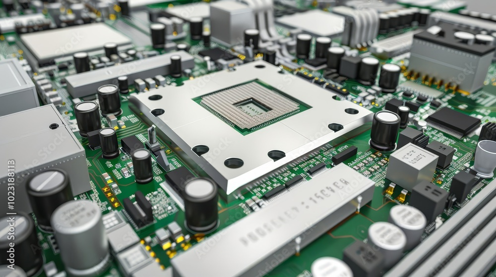

A Processzor (CPU)

Mi az a CPU?
A CPU (Central Processing Unit), vagyis a központi feldolgozó egység, a számítógép "agya". Ez az alkatrész végzi a legtöbb számítást és vezérli a többi komponenst. A sebessége alapvetően határozza meg, hogy milyen gyorsnak érezzük a gépet.
Fontos Tulajdonságok
- Magok száma (Cores): Több mag = több feladat egyszerre. Játékokhoz általában 6-8 mag ideális.
- Órajel (GHz): Milyen gyorsan tud számolni a processzor. Minél magasabb, annál jobb (általában).
- Gyorsítótár (Cache): Szupergyors memória a processzoron belül.
Intel vs AMD
A két örök rivális:
- Intel (Core i3, i5, i7, i9): Hagyományosan erős az egyszálas teljesítményben, kiváló játékokhoz.
- AMD (Ryzen 3, 5, 7, 9): Gyakran több magot kinálnak hasonló áron, kiváló multitaskingra és tartalomgyártásra.